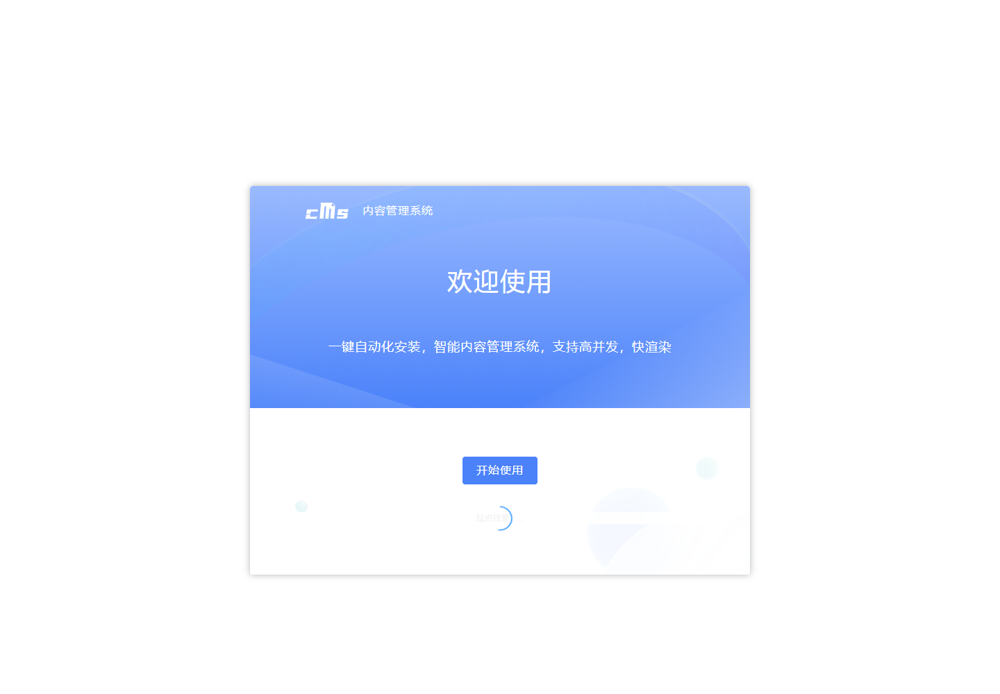
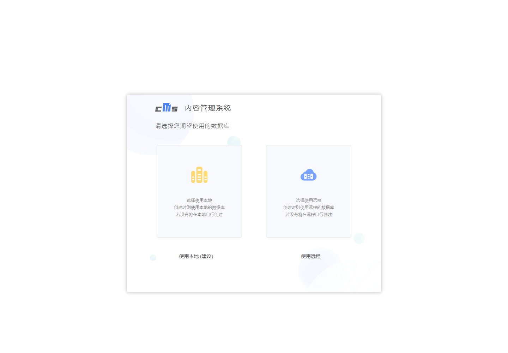
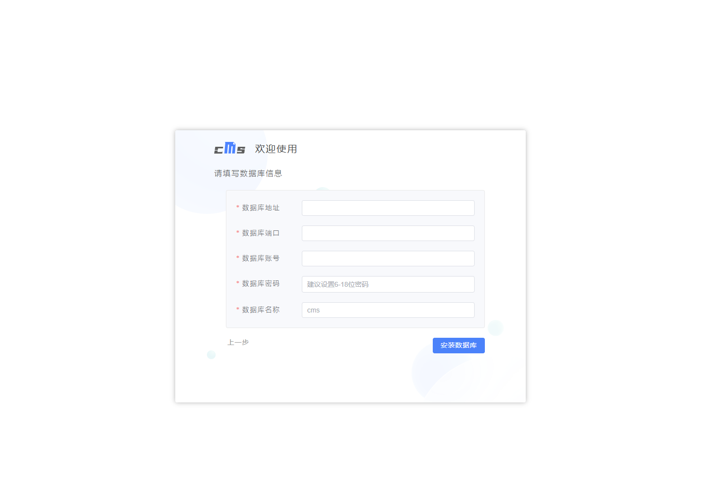
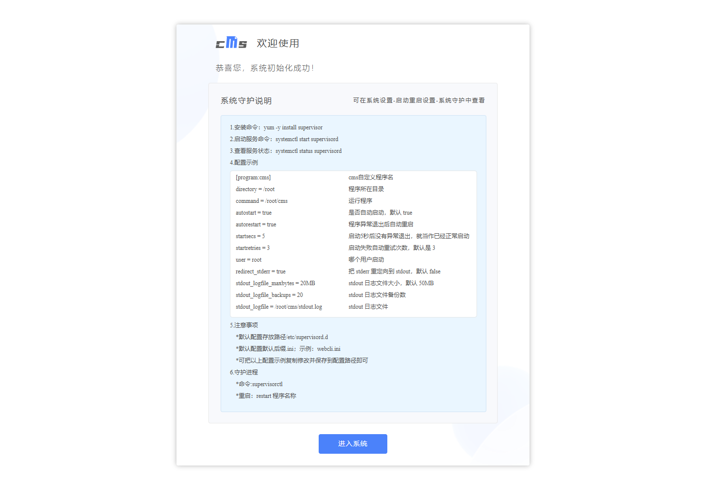
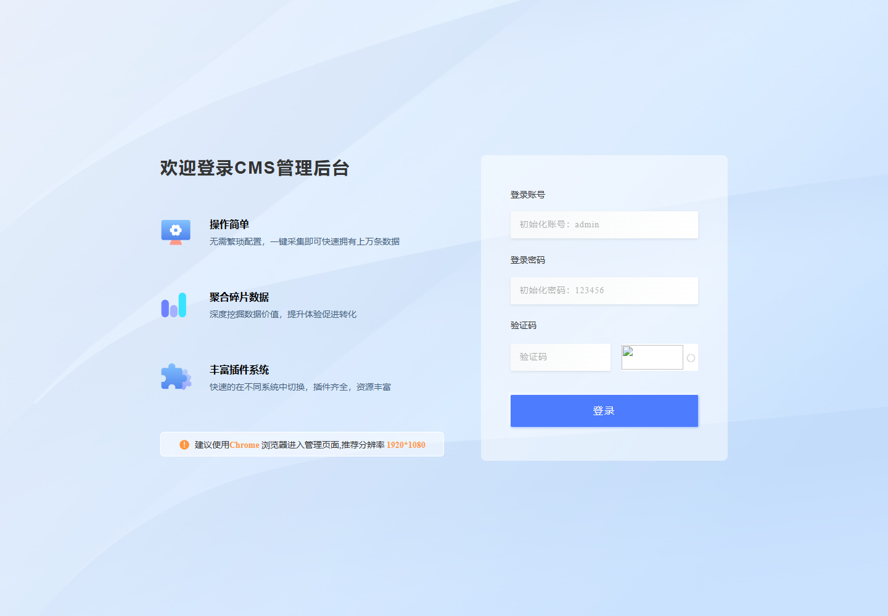

图文安装教程
以 Debian / Ubuntu + MySQL 8.0 + systemd 为例，路径统一使用 /www/wwwroot/iycms。CentOS 只需把包管理命令换成 yum。
0. 一键安装（推荐）
适用于全新服务器（Debian / Ubuntu 或 RHEL / CentOS）。脚本会完成：下载归档 → SHA256 校验 → 解压 → 建库建用户 → 写 config.conf → 注册 systemd → 启动并探测端口。
curl -fsSL https://raw.githubusercontent.com/Minerchu/iycms-archive/main/install.sh -o /tmp/iycms-install.sh
sudo bash /tmp/iycms-install.sh非交互（适合面板 / 自动化），提前提供 MySQL root 密码：
DB_ROOT_PASS='你的MySQL root密码' sudo -E bash /tmp/iycms-install.sh常用参数：--dir 安装目录、--http-port / --backend-port 端口、--db-name / --db-user / --db-pass 数据库信息、--skip-db 使用已有库、--force 覆盖安装。bash install.sh --help 查看全部。
安装完成后脚本会打印前台、后台、安装向导地址和自动生成的数据库密码。下面的 1–9 节是手动安装流程，适合自定义目录、端口或已有环境。
1. 环境要求
| 项目 | 要求 |
|---|---|
| 操作系统 | Linux x86-64（实测 Debian 12 / Ubuntu 22.04），需 systemd |
| 依赖库 | glibc 2.28+（程序为动态链接 ELF） |
| 数据库 | MySQL 5.7 / 8.0（安装向导也支持 PostgreSQL 11+） |
| 端口 | 51200 前台 HTTP、21007 后台 HTTP；对外只需放行 80/443（经 nginx） |
| 磁盘 | 建议 ≥ 2 GB 可用空间（含模板与后续上传） |
端口不是写死的：config.conf 里的 httpPort / backendPort 可以改，改完重启服务即可。
2. 上传与解压
把仓库里的 package/ 整个目录上传到服务器，或上传归档包后解压：
mkdir -p /www/wwwroot/iycms
cd /www/wwwroot/iycms
# 方式 A：直接上传 package/ 目录内容后，确认结构如下
ls -la
# cms html/ data/ config.example.json iycms.service
# 方式 B：上传 iycms-backup-2026-11-07.tar.gz 后解压
# tar xzf iycms-backup-2026-11-07.tar.gz --strip-components=1
# ls -la
chmod +x cmshtml/ 必须与 cms 位于同一目录，程序按相对路径读取静态资源；data/ 需要可写。
3. 创建数据库
mysql -uroot -p <<'SQL'
CREATE DATABASE iycms DEFAULT CHARACTER SET utf8mb4 COLLATE utf8mb4_unicode_ci;
CREATE USER 'iycms'@'127.0.0.1' IDENTIFIED BY 'ChangeMe_StrongPassw0rd';
GRANT ALL PRIVILEGES ON iycms.* TO 'iycms'@'127.0.0.1';
FLUSH PRIVILEGES;
SQL如果数据库与程序不在同一台机器，把 127.0.0.1 换成程序所在服务器 IP，并确认 MySQL 监听与防火墙。
4. 写入配置
复制模板并填写真实数据库信息。dbType: 2 对应 MySQL（从现有实例观测得到；PostgreSQL 使用向导安装时会自动写入对应值）。
cp config.example.json config.conf
vi config.conf{
"dbType": 2,
"dbHost": "127.0.0.1",
"dbName": "iycms",
"dbUser": "iycms",
"dbPassword": "ChangeMe_StrongPassw0rd",
"dbPort": 3306,
"backendPort": 21007,
"openHttp": true,
"httpPort": 51200,
"openHttps": false,
"httpsPort": 443,
"env": ""
}| 字段 | 说明 |
|---|---|
httpPort | 前台 HTTP 监听端口，默认 51200 |
backendPort | 后台监听端口，默认 21007 |
openHttps | 是否由程序自身监听 HTTPS；套 nginx 时保持 false |
env | 环境标识，留空即可 |
5. 用 systemd 启动
cat > /etc/systemd/system/iycms.service <<'EOF'
[Unit]
Description=iycms service
After=network-online.target
Wants=network-online.target
[Service]
Type=simple
User=root
WorkingDirectory=/www/wwwroot/iycms
ExecStart=/www/wwwroot/iycms/cms
Restart=always
RestartSec=5
StandardOutput=append:/www/wwwroot/iycms/stdout.log
StandardError=append:/www/wwwroot/iycms/stdout.log
[Install]
WantedBy=multi-user.target
EOF
systemctl daemon-reload
systemctl enable --now iycms
systemctl status iycms --no-pager
ss -tlnp | grep -E '51200|21007'安全提醒：原实例以 root 运行。生产环境建议新建低权限用户（如 www），把程序目录 chown 给该用户，再把 User= 改成它。
6. 安装向导
服务启动后，浏览器访问 http://服务器IP:51200/install。首次安装会依次出现以下页面（截图取自实际程序资源）：
欢迎页
确认安装目录识别正确，点击「开始使用」。

选择数据库
选择本地或远程数据库，以及 MySQL / PostgreSQL。大多数场景选「本地 + MySQL」。

填写数据库连接
填写第 3 步创建的库名、账号、密码。地址填 127.0.0.1，端口 3306。

站点信息 / 系统守护
设置站点名称与管理员账号。页面下方会给出 supervisor 守护配置示例；如果已经用 systemd 托管，可以忽略。

安装完成后目录下会生成 install.lock（安装锁定文件）。再次访问 /install 会返回 404 或被拦截，这是正常现象。
7. nginx 反向代理（推荐）
让程序只监听本机，由 nginx 对外提供 80/443：
server {
listen 80;
server_name cms.example.com;
client_max_body_size 100m;
location / {
proxy_pass http://127.0.0.1:51200;
proxy_http_version 1.1;
proxy_set_header Host $host;
proxy_set_header X-Real-IP $remote_addr;
proxy_set_header X-Forwarded-For $proxy_add_x_forwarded_for;
proxy_set_header X-Forwarded-Proto $scheme;
proxy_set_header Upgrade $http_upgrade;
proxy_set_header Connection "upgrade";
}
}
# 后台单独一个域名，或用 allow/deny 限制来源 IP
server {
listen 80;
server_name admin.example.com;
location / {
proxy_pass http://127.0.0.1:21007;
proxy_http_version 1.1;
proxy_set_header Host $host;
proxy_set_header X-Real-IP $remote_addr;
proxy_set_header X-Forwarded-For $proxy_add_x_forwarded_for;
proxy_set_header Upgrade $http_upgrade;
proxy_set_header Connection "upgrade";
}
}nginx -t && systemctl reload nginx
# 防火墙只放行 80/443，不要直接暴露 51200/21007
ufw allow 80,443/tcp8. 登录后台
后台入口：http://服务器IP:21007/backend/（或你绑定的后台域名）。初始账号在登录页有提示，通常是 admin / 123456，登录后立即修改。

9. 验收与排错
# 前台
curl -s -o /dev/null -w 'front %{http_code}\n' http://127.0.0.1:51200/
# 后台
curl -s -o /dev/null -w 'admin %{http_code}\n' http://127.0.0.1:21007/backend/
# 服务日志
journalctl -u iycms -n 100 --no-pager
tail -n 100 /www/wwwroot/iycms/stdout.log| 现象 | 处理 |
|---|---|
| 502 Bad Gateway | 程序没起来或端口不对：systemctl status iycms、ss -tlnp、看 stdout.log |
/install 404 | 已经安装过（存在 install.lock）。重装需删除 install.lock 并备份数据库 |
| 数据库连接失败 | 核对 config.conf，确认 MySQL 允许 127.0.0.1 登录与库权限 |
| 后台打不开 | 确认 21007 监听；若走 nginx，检查后台 server 块与防火墙 |
| 提示「安装锁定文件被篡改」 | 见下图。恢复原 install.lock；确认不是目录权限泄露导致被改写 |
stdout.log 过大 | 配置 logrotate，或改用 journald；不要把 800MB 级日志留在仓库里 |